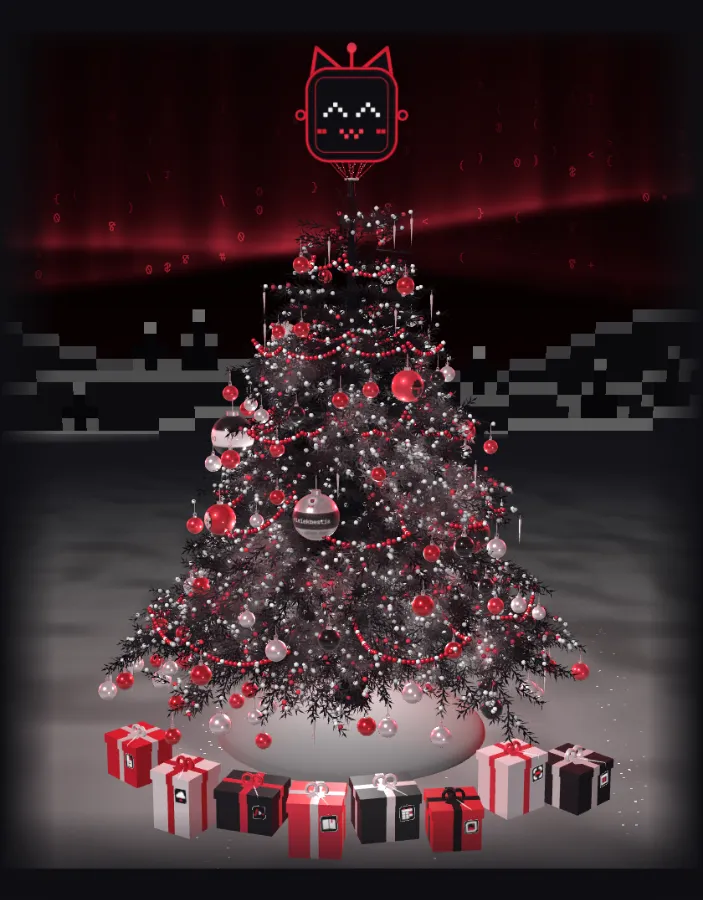

cyber
sora
przeciągnij: obrót · kółko: zbliżenie
najedź na prezent · trąć bombkę kursorem
kliknij hologram na czubku
cały widok
choinka cybersory
Pod choinką leżą nasze programy
Najedź na prezent, a się otworzy. Na bombkach wisi ekipa.
muzyka
światełka
śnieg
obrót